Enabling Adaptive Agent Training in Open-Ended Simulators by Targeting Diversity
This work introduces DIVA , a method combining quality diversity (QD) optimization and unsupervised environment design (UED) for adaptive agent training in simulation.
Introduction
Despite the broadening application of reinforcement learning (RL)methods to real-world problems
, generalization to new scenarios—ones not
explicitly supported by the training set—remains a fundamental challenge
. Meta-reinforcement learning (meta-RL), an extension of the RL
framework, is formulated specifically for training adaptive agents, and is thus well-suited for
overcoming these generalization gaps . One recent work has demonstrated
that meta-RL agents can be trained at scale to achieve adaptation capabilities on par with human subjects
. However, learning this human-like adaptive behavior
naturally requires a large amount of data representative of the downstream (or target) distribution.
For task distributions approaching real-world complexity—precisely the ones of interest—designing each
scenario by hand is prohibitively expensive.
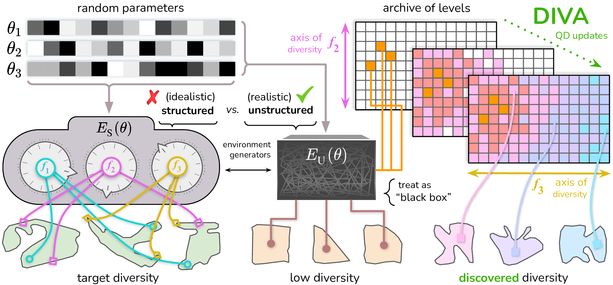
A conceptual diagram illustrating the challenges in meta-reinforcement learning.
Prior works have explored the use of domain randomization ( DR ) and procedural generation (PG) techniques to
produce diverse training data for learning agents . Despite eliminating
the need for hand-designing each task individually, human labor is still required to carefully design an
environment generator that can produce diverse, high-quality tasks. As environments become more complex and
open-ended, the ability to hand-design such a robust generator becomes increasingly infeasible. Some methods,
like PLR , attempt to ameliorate this limitation by learning a curriculum
over the generated levels, but these works still operate under the assumption that the generator produces
meaningfully diverse levels with a high probability.
Unsupervised environment design (UED) approaches use performance-based
metrics to adaptively form a curriculum of training levels. ACCEL, a state-of-the-art UED method, uses an evolutionary process to
discover more interesting regions of the simulator's parameter space (i.e., appropriately challenging tasks)
than can be found by random sampling. While UED approaches are designed to be generally applicable and require
little domain knowledge, they implicitly require a very constrained environment generator—one in which all axes
of difficulty correspond to meaningful learning potential for the downstream distribution. Moreover, when faced
with complex open-ended environments with arbitrary parameterizations, even ACCEL is not able to efficiently
explore the solution space, as it is still bottlenecked by the speed of agent evaluations.
In this work, we introduce DIVA, an approach for generating
diverse training tasks in open-ended simulators to train adaptive
agents. By using quality diversity (QD) optimization to efficiently explore the solution space, DIVA bypasses
the problem of needing to evaluate agents on all generated levels. QD also enables fine-grained control over the
axes of diversity to be captured in the training tasks, allowing the flexible integration of task-related prior
knowledge from both domain experts and learning approaches. We demonstrate that DIVA, with limited supervision
in the form of feature samples from the target distribution, significantly outperforms state-of-the-art UED
approaches—despite the UED approaches being provided with significantly more interactions. We further show that
UED techniques can be integrated into DIVA. Preliminary results with this combination (which we call DIVA+)
are promising and suggest an exciting avenue for future work.
Preliminaries
Meta-reinforcement learning
We use the meta-reinforcement learning (meta-RL) framework to train adaptive agents, which involves learning
an adaptive policy \pi_\phi over a distribution of tasks \mathcal{T}. Each
\mathcal{M}_i \in \mathcal{T} is a Markov decision process (MDP) defined by a tuple
\langle \mathcal{S}, \mathcal{A}, P, R, \gamma, T \rangle, where
\mathcal{S} is the set of states, \mathcal{A} is the set of actions,
P(s_{t+1} | s_t, a_t) is the transition distribution between states given the current
state and action, R(s_t, a_t) is the reward function,
\gamma \in [0, 1] is the discount factor, and T is the horizon.
Meta-training involves sampling tasks \mathcal{M}_i \sim \mathcal{T}, collecting trajectories
\mathcal{D} = \{ \tau^h \}^H_{h=0}—where H is the number of
episodes in each trial\tau pertaining to the
\mathcal{M}_i—and optimizing policy parameters \phi to maximize the expected
discounted returns across all episodes.
VariBAD is a context variable-based meta-RL approach that belongs to
the wider class of RNN-based methods . While prior methods
also use context variables to assist in task
adaptation, VariBAD uniquely learns within a belief-augmented MDP (BAMDP)
\langle \mathcal{S}, \mathcal{A}, \mathcal{Z}, P, R, \gamma, T \rangle, where the context
variables z \in \mathcal{Z} encode the agent's uncertainty about the task, promoting Bayesian
exploration. VariBAD utilizes an RNN-based variational autoencoder (VAE) to model a posterior belief over
possible tasks given the full agent trajectory, permitting efficient updates to prior beliefs.
Quality diversity
For a given problem, the quality diversity (QD) optimization framework aims to generate a set of diverse,
high-quality solutions. Formally, a problem instance of QD specifies
an objective function J : \mathbb{R}^n \rightarrow \mathbb{R} and k features
f_i: \mathbb{R}^n \rightarrow \mathbb{R}. Let
S=\bm{f}(\mathbb{R}^n) be the feature space formed by the range of
f, where {\boldsymbol{f}} : \mathbb{R}^n \rightarrow \mathbb{R}^k is the joint
feature vector. For each {\boldsymbol{s}} \in S, the QD objective is to find a solution
\bm{\theta} \in \mathbb{R}^n where {\boldsymbol{f}}(\bm{\theta}) = {\boldsymbol{s}} and
J(\bm{\theta}) is maximized.
Since \mathbb{R}^k is continuous, an algorithm solving the QD problem definition above would
require unbounded memory to store all solutions. QD algorithms in the MAP-Elites
family therefore discretize S via a tessellation
method, where \mathcal{G} is a tessellation of the continuous feature space
S into N_\mathcal{G} cells. In employing a MAP-Elites algorithm, we relax the
QD objective to find a set of solutions \bm{\theta}_i, i \in \{1, \ldots, N_\mathcal{G} \},
such that each \bm{\theta}_i occupies one unique cell in \mathcal{G}. We call
the occupants \bm{\theta}_i of all M cells, each with its own position
{\boldsymbol{f}}(\bm{\theta}_i) and objective value J(\bm{\theta}_i), the
archive of solutions.
Problem Setting
One assumption underlying UED methods is that random parameters—or parameter perturbations for
ACCEL—produce meaningfully different levels to justify the expense of computing
objectives on each newly generated level. However, when the genotype is not
well-behaved—when meaningful diversity is rarely generated through random
sampling or mutations—these algorithms waste significant time evaluating redundant levels. In our work, we
discard the assumption of well-behaved genotypes in favor of making fewer, more realistic
assumptions about complex environment generators. There are several assumptions we make about the simulated
environments DIVA has access to.
Genotypes
We assume access to an unstructured environment parameterization function
E_U(\bm{\theta}), where each \bm{\theta} is a genotype (corresponding
to the QD solutions \bm{\theta}_i) describing parameters to be fed into the environment
generator. QD algorithms can support both continuous and discrete genotype spaces, and in this work, we evaluate
on domains with both kinds. Crucially, we make no assumption of the quality of the training tasks
produced by this random generator. We only assume that (1)
There is some nonzero (and for practical purposes, nontrivial) probability that this generator will produce a
valid level for training—one in which success is possible and positive rewards are in reach; and (2) that it is computationally feasible to discover meaningful feature diversity through an intelligent search over the
parameter space—an assumption implicit in all QD applications.
Features
We assume access to a pre-defined set of features, S = {\boldsymbol{f}}(\mathbb{R}^n), that capture
axes of diversity which accurately characterize the diversity to be expected within the downstream task
distribution. It is also possible to learn or select good environment features from a sample of tasks from the
downstream distribution, which we discuss in Discussion. For the sake of simplicity,
we use a grid archive as our tessellation \mathcal{G}, where the
k dimensions of the discrete archive correspond to the defined features. The number of bins for
each feature is a hyperparameter and can be learned or adapted over the course of training. We generally find it
to be helpful to use moderately high resolutions to ease the search, since smaller leaps in feature-level
diversity are required to uncover new cells. By default, we use 100 sample feature values across all domains,
but demonstrate in ablation studies that significantly fewer may be used (see
Appendix).
DIVA
DIVA assumes access to a small set of feature samples representative of the target
domain. It does not, however, require access to the underlying levels themselves. This is a key distinction, as
the former is a significantly weaker assumption. Consider the problem of training in-home assistive robots in
simulation with the objective of adapting to real-world houses. It is more likely we have access to publicly
available data describing typical houses—dimensions, stylistic features, etc.—than we have access to
corresponding simulator parameters which produce those exact feature values.
Feature Density Estimation
DIVA begins by constructing a QD archive with appropriate bounds and
resolution. Given a set of specified features\{f_i\}_{i=1}^k and a handful of downstream feature samples, we first infer each
feature's underlying distribution. These can be approximated with kernel density estimation (KDE), or we can
work with certain families of parameterized distributions. For our experiments, we assume each feature is either
(independently) normally or uniformly distributed. We use a statistical test1 to evaluate the fit of
each distribution family and select the best-fitting. Setting the resolution for discrete feature dimensions is
straightforward, and depends only on the range. For continuous features, the resolution should enable enough
signal for discovering new cells while avoiding practical issues that arise with too many cells.
See Section 6 for domain-specific details.
1We use a Kolmogorov–Smirnov test for features with continuous values and Chi-squared for discrete.
Two-Stage QD Updates
Once the feature-specific target distributions are determined, we can use these to set bounds for each archive
dimension. A naïve approach would be to set the archive ranges for each feature based on the confidence bounds of
the target distribution. However, random samples from
E_\textnormal{U} may not produce feature values that fall within the target range. We found this
to be a major issue in the Alchemy domain, and for some features in
Racing. We solve this problem by setting the initial archive bounds to include both randomly generated
samples from E_\textnormal{U}, as well as the full target region. As the updates progress, we
gradually update the sample mask—which is used to inform the sampling of new solutions—towards the
target region. We observe empirically that updating and applying this mask provides an enormous speed-up in
guiding solutions towards the target region. After this first stage, solutions are inserted into a
new archive defined by the proper target bounds. See Appendix A for more specifics
on these two QD update stages.
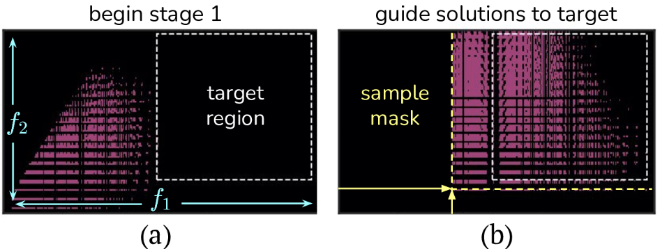
DIVA Stage 1 updates.
The first stage (a) begins with bounds
that encapsulate initial solutions and the target region. As the first stage progresses (b), and QD discovers
more of the solution space, the sampling region for the emitters gradually shrinks towards the target region.
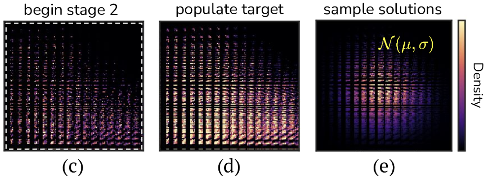
DIVA Stage 2 updates.
The second stage begins by redefining the archive bounds to be the target region and including some
extra feature dimensions (c). QD fills out just the target region now (d), using sample weights from the
target-derived prior (e), the same distribution used to sample levels during meta-training.
DIVA: An Overview
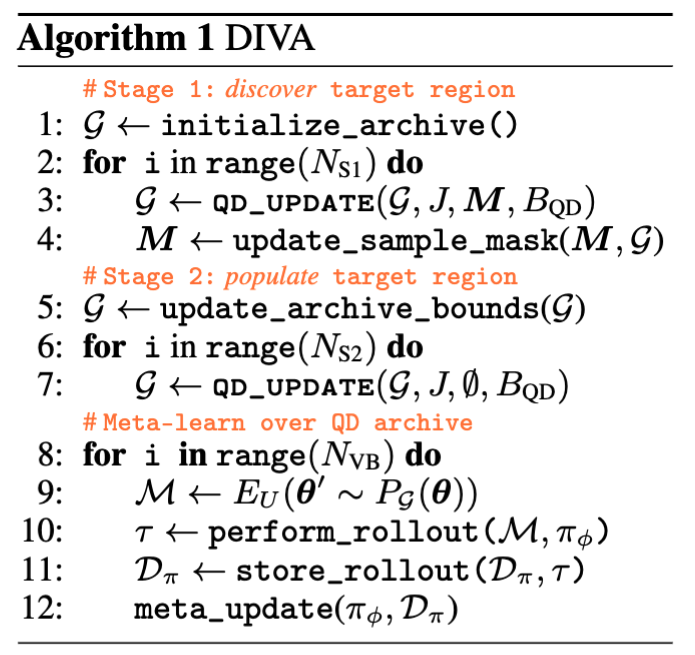
DIVA consists of three stages.
Stage 1 (S1) begins by initializing the archive with bounds that include both
the downstream feature samples (the target region) and the initial population generated from
E_U(\theta). S1 then proceeds with alternating QD updates, to discover new solutions,
and sample mask updates, to guide the population towards the target region. In
Stage 2 (S2), the archive is reinitialized with existing solutions but is now
bounded by the target region. QD updates continue to further diversify the population, now targeting the
downstream feature values specifically. The last stage is standard
meta-training, where training task parameters are now drawn from
P_\mathcal{G}(\bm{\theta}), a distribution over the feature space approximated using the
downstream feature samples, discretized over the archive cells. See Appendix A
for detailed pseudocode.
Empirical Results
Baselines
We implement the following baselines to evaluate their relative performance to
DIVA. ODS is the "oracle" agent trained over the downstream
environment distribution E_\textnormal{S}(\bm{\theta}), used for evaluation.
With this baseline, we are benchmarking the upper bound in performance from the perspective of a
learning algorithm that has access to the underlying data distribution.1DR is the meta-learner trained over a task distribution defined by performing
domain randomization over the space of valid genotypes, \bm{\theta}, under the
training parameterization, E_\textnormal{U}(\bm{\theta}). Robust PLR
(PLR⊥) is the improved and theoretically grounded version of PLR,
where agents' performance-based PLR objectives are evaluated on each level before using
them for training. ACCEL is the same as PLR⊥ but instead of randomly
sampling over the genotype space to generate levels for evaluation, levels are mutated from existing
solutions. All baselines use VariBAD as their base meta-learner.
1 Technically, reweighting this distribution (e.g., via PLR) may produce a stronger oracle,
but for the purposes of this work, we assume the unaltered downstream distribution can be efficiently
trained over, sans curriculum.
Experimental Setup
The oracle agent (ODS) is first trained over each environment's downstream distribution to tune
VariBAD's hyperparameters. These environment-specific VariBAD settings are then fixed while
hyperparameters for DIVA and the other baselines are tuned. For fairness of comparison—since
DIVA is allowed N_\textnormal{QD} QD update steps to fill its archive before
meta-training—we allow each UED approach (PLR⊥ and ACCEL) to use significantly
more environment steps for agent evaluations (details discussed below per environment). All
empirical results were run with 5 seeds unless otherwise specified, and error bars indicate a
95% confidence region for the metric in question. The QD archive parameters were set per
environment, and for Alchemy and Racing, relied on some hand-tuning to find
the right combinations of features and objectives. We leave it to future work to perform a deeper
analysis on what constitutes good archive design, and how to better automate this process.
GridNav
Our first evaluation domain is a modified version of GridNav, originally introduced
to motivate and benchmark VariBAD. The agent spawns at the center of the grid at the start of
each episode and receives a slight negative reward (r = -0.1) each step until it
discovers (inhabits) the goal cell, at which point it also receives a larger positive reward
(r = 1.0).
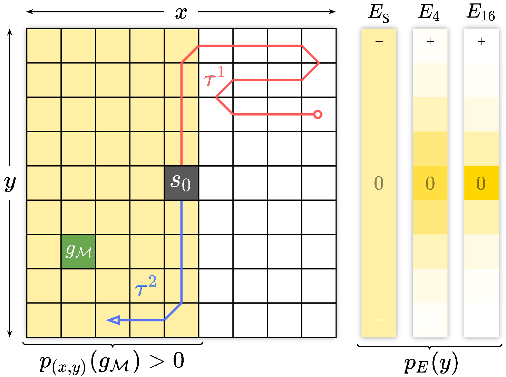
Left: A NAV agent attempting to locate the goal across two episodic rollouts.
Right: The marginal probability of sampled goals inhabiting each y for different complexities k of E_k(θ).
Parameterization
We parameterize the task space (i.e., the goal location) to reduce the likelihood of generating
meaningfully diverse goals. Specifically, each
E_{\textnormal{U}_k} introduces k genes to the solution
genotype which together define the final y location. Each gene
j can assume the values \{-1, 0, 1\}, and the final
y location is determined by summing these values and performing a floor
division to map the bounds back to the original range of the grid. As k increases,
y values are increasingly biased towards 0. For more details
on the GridNav domain, see Appendix B.1.
QD Updates
We define the archive features to be the x and y coordinates of
the goal location. The objective is set to the current iteration so that newer solutions are
prioritized (additional details in Appendix B.1). DIVA is provided
N_\textnormal{TRS} = 8.0 \times 10^4 QD update iterations for filling the
archive. To compensate, PLR⊥ and ACCEL are each provided with an additional
9.6 \times 10^6 environment steps for evaluating PLR scores, which amounts
to three times as many total interactions—since all methods are provided
N_E = 4.8 \times 10^6 interactions for training. If each "reset" call counts as
one environment step2, the UED baselines are effectively granted 2.4× more
additional step data than what DIVA additionally receives through its QD updates
(details in Appendix D).
2 In general, rendering the environment (via "reset") is required to compute level features
for DIVA.
Results
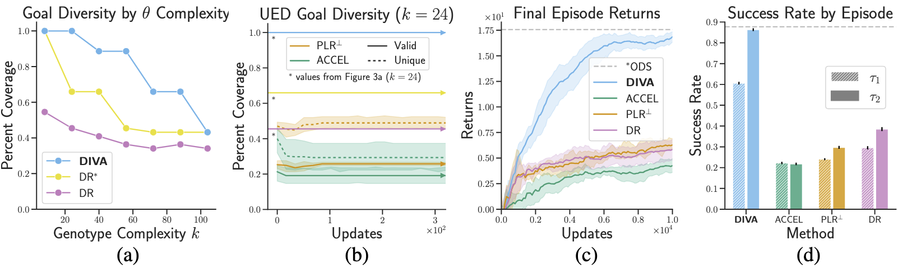
NAV analysis and results.
(a) Target region coverage produced by Ours and DR over different genotype complexities k. DR represents the average coverage of batches corresponding to the size of the QD archive. DR* represents the total number of unique levels discovered over the course of parameter randomization steps which equal in number to the additional environments RPLR is provided for evaluation. DR* is thus an upper bound on the diversity that RPLR can capture. 500k iterations (QD or otherwise) are used across all results.
(b) The diversity produced by PLR⊥ and ACCEL over the course of training (later updates omitted due to no change in trend).
(c) Final episode return curves for Ours and baselines.
(d) Final method success rates across each episode.
From (a), we see that increasing genotype complexity (i.e., larger k) reduces
goal diversity for DR—which is expected given the parameterization defined for
E_\textnormal{U}. We can also see that DIVA, as a result of its QD updates, can
effectively capture goal diversity, even as complexity increases. When we fix the complexity
(k=24) and train over the E_\textnormal{U} distribution, we
see that the UED approaches are unable to incidentally discover and capture diversity
over the course of training (b). DIVA's explicit focus on capturing meaningful level diversity
enables it to significantly outperform these baselines in terms of episodic return (c) and
success rate (d).
Alchemy
Alchemy is an artificial chemistry environment with a combinatorially complex task
distribution. Each task is defined by some latent chemistry, which influences the underlying
dynamics as well as agent observations. To successfully maximize returns over the course of a trial,
the agent must infer and exploit this latent chemistry. At the start of each episode, the agent is
provided a new set of (1-12) potions and (1-3) stones, where each stone has a
latent state defined by a specific vertex of a cube (e.g., (\{0, 1\}, \{0, 1\}, \{0, 1\})),
and each potion has a latent effect, or specific manner in which it transforms stone latent
states. The agent observes only salient artifacts of this latent information
and must use interactions to identify the ground-truth mechanics. At each step, the agent can apply
any remaining potion to any remaining stone. Each stone's value is maximized the closer its
latent state is to (1, 1, 1), and rewards are produced when stones are cast into the
cauldron.
To make training feasible on academic resources, we perform evaluations on the
symbolic version of Alchemy, as opposed to the full Unity-based version. Symbolic Alchemy
contains the same mechanistic complexity, minus the visuomotor challenges which are irrelevant to this
project's aims.
Parameterization
E_\textnormal{S}(\bm{\theta}) is the downstream distribution containing maximal stone
diversity. For training, we implement E_{\textnormal{U}_{k}}(\bm{\theta}), where
k controls the level of difficulty in generating diverse stones. Specifically, we
introduce a larger set of coordinating genes
\bm{\theta}_j \in \{0, 1\} that together specify the initial stone latent states, similar
to the mechanism used in GridNav to limit goal diversity. Each stone latent coordinate is specified
with k genes, and only when all kgenes are set to 1
is the latent coordinate set to 1. When any of the genes are 0, the latent coordinate
is 0. For our experiments, we set k=8, and henceforth use
E_\textnormal{U} to signify E_{\textnormal{U}_8}.
QD Updates
We use features LatentStateDiversity (LSD) and
ManhattanToOptimal (MTO)—both of which target stone latent
state diversity from different angles. See Appendix B.2 for more specifics
on these features and other details surrounding Alchemy's archive construction. Like GridNav, the
objective is set to bias new solutions. DIVA is provided
N_\textnormal{TRS} = 8.0 \times 10^4 and
N_\textnormal{TRS} = 3.0 \times 10^4 QD update iterations for filling the archive.
PLR⊥ and ACCEL are compensated such that they receive 3.5× more
additional step data than what DIVA receives via QD updates (see
Appendix D for details).
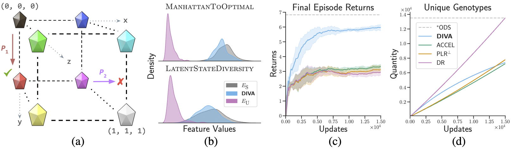
Alchemy environment and results.
(a) A visual representation of Alchemy's structured stone latent space. P₁ and P₂ represent potions acting on stones. Only P₁ results in a latent state change, because P₂ would push the stone outside of the valid latent lattice.
(b) Marginal feature distributions for E_S (the structured target distribution), Ours, and E_U (the unstructured distribution used directly for DR, and to initialize Ours' archive).
(c) Final episode return curves for Ours and baselines.
(d) Number of unique genotypes used by each method over the course of meta-training.
Results
Our empirical results demonstrate that DIVA is able to generate latent stone states with diversity
representative of the target distribution. We see this both quantitatively (b) and qualitatively
(d). In (c), we see this diversity translates to significantly better results on
E_\textnormal{S} over baselines. Despite generating roughly as many unique
genotypes as DIVA (e), PLR⊥ and ACCEL are unable to generate training
stone sets of significant phenotypical diversity to enable success on the downstream
distribution.
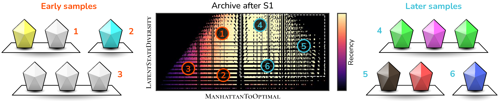
Alchemy Level Diversity: Early on in DIVA's QD updates (left), the levels in the
archive do not possess much latent stone diversity—all are close to (1, 1, 1). As samples begin
populating the target region in later QD updates (right), we see stone diversity is significantly
increased.
Racing
Lastly, we evaluate DIVA on the Racing domain introduced by Jiang et al. .
In this environment, the agent controls a race car via simulated steering and gas pedal mechanisms and is rewarded
for efficiently completing the track, \mathcal{M}_i \in \mathcal{T}. We adapt this RL environment
to the meta-RL setting by lowering the resolution of the observation space significantly. By increasing the challenge
of perception, even competent agents benefit from multiple episodes to better understand the underlying track.
For all of our experiments, we use H=2 episodes per trial and a flattened 15×15 pixel observation
space.
Setup
We use three different parameterizations in our experiments:
E_\textnormal{S}(\bm{\theta}) is the downstream distribution we use for evaluating all methods,
training ODS, and setting archive bounds for DIVA. Parameters
\bm{\theta} are used to seed the random generation of control points which in turn
parameterize a sequence of Bézier curves designed to smoothly transition between the control locations.
Track diversity is further enforced by rejecting levels with control points that possess a standard deviation
below a certain threshold.
E_{\textnormal{U}_{k}}(\bm{\theta}) is a reparameterization of
E_\textnormal{S}(\bm{\theta}) that makes track diversity harder to generate, with the difficulty
proportional to the value of k \in \mathbb{N}. For our experiments, we use k=32
(denoted simply as E_\textnormal{U}(\bm{\theta})), which roughly means that meaningful diversity is
32× less likely to randomly occur than when k=1 (equivalent to
E_\textnormal{S}(\bm{\theta})). This is achieved by defining a small region in the center,
32 (or k) times smaller than the track boundaries, where all points outside the region are
projected onto the unit square and scaled to the track size.
E_{\textnormal{F1}}(\bm{\theta}) uses \bm{\theta} as an RNG seed to select between
a set of 20 hand-crafted levels modeled after official Formula-1 tracks
, and is used to benchmark DIVA's zero-shot generalization to a new
target distribution.
QD Updates
We define features TotalAngleChange (TAC) and
CenterOfMassX (CX) for the archive dimensions. Levels from
E_\textnormal{U} lack curvature (see below), so
TAC, which is defined as the sum of angle changes between track segments,
is useful for directly targeting this desired curvature.
CX, or the average location of the segments, targets diversity in the location
of these high-density (high-curvature) regions. We compute an alignment objective over features
CY and VY to further target
downstream diversity. See Appendix B.3 for more details relevant to the archive construction process
for Racing. DIVA is provided with 2.5 \times 10^5 initial QD updates on Racing. PLR⊥ and ACCEL
are compensated with 4.0× more additional step data than what DIVA receives through QD updates (see
Appendix D for more details).
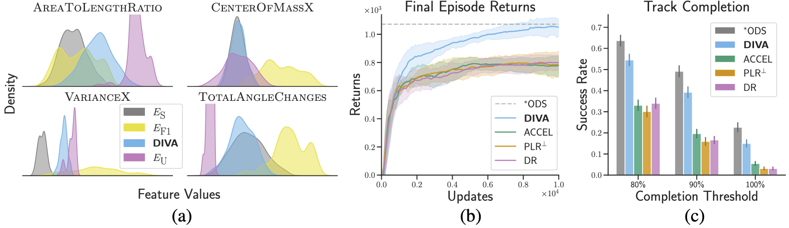
Racing features and main results.Left: Marginal feature distributions for E_S (the structured target distribution), E_F1 (human-designed F1 tracks), Ours, and E_U (the unstructured distribution used for DR, the original levels that Ours evolves).
Center: Final episode return curves for Ours and baselines on E_S.
Right: Track completion rates by method, evaluated on E_S.
Main Results
From the results above, we see DIVA outperforms all baselines, including the UED approaches, which have access to
three times as many environment interactions. Below, we see that final DIVA levels contain significantly
more diversity than randomization over E_\textnormal{U}.
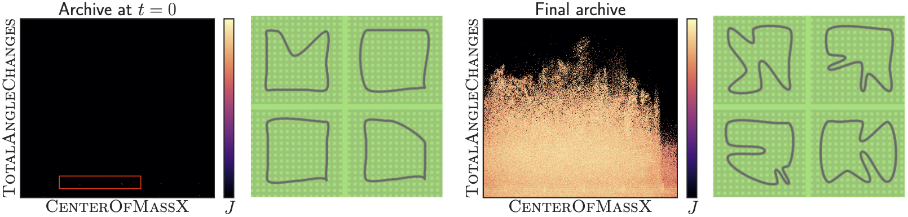
Racing level diversity.
We see that E_U levels, used by DR, and forming the initial population of Ours, are unable to produce qualitatively diverse tracks (left).
After the two-stage QD-updates, Ours is able to produce tracks of high qualitative diversity (right).
Transfer to F1 Tracks
Next, we evaluate the ability of these trained policies to zero-shot transfer to human-designed F1 levels
(E_\textnormal{F1}). Though qualitative differences are apparent (see below), from the figure above
we can additionally see how these levels differ quantitatively.
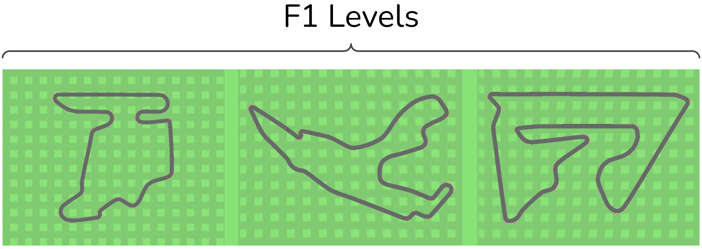
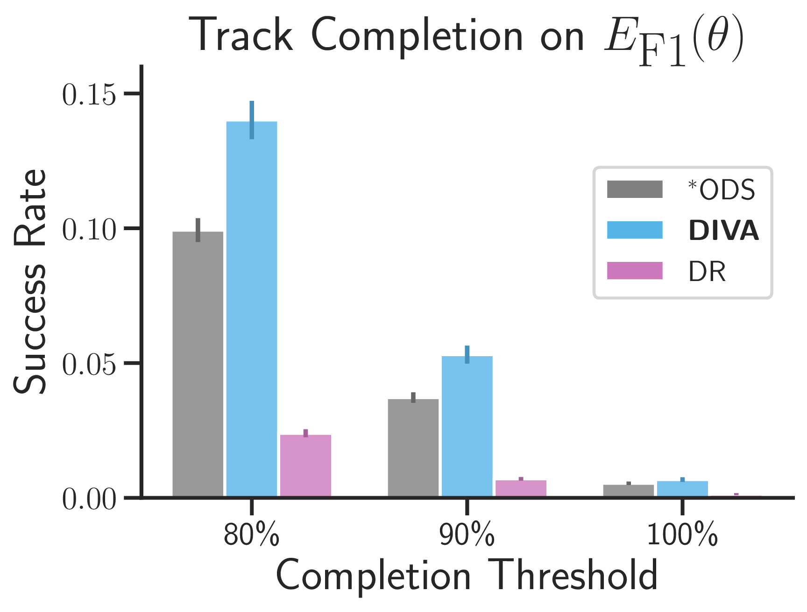
Racing F1 Transfer: Tracks generated by DIVA are qualitatively distinct from F1 tracks, yet the
agent achieves significant zero-shot transfer success.
Even though DIVA uses feature samples from
E_\textnormal{S} to define its archive, we see from the results above that DIVA is not only
able to complete many of these tracks, but is also able to significantly outperform ODS. One possible explanation
is that while DIVA successfully matches its Total Angle Change distribution to
E_\textnormal{S}, it produces sharper angles, which is evidently useful for
transferring to (these) human-designed tracks. This hypothesis matches what we see qualitatively from the
DIVA-produced levels further up.
Combining DIVA and UED
While PLR⊥ and ACCEL struggle on our evaluation domains, they still have utility of their own, which
we hypothesize may be compatible withDIVA's. As a preliminary experiment to evaluate the potential of such
a combination, we introduce DIVA+, which still uses DIVA to generate diverse training samples via
QD, but additionally uses PLR⊥ to define a new distribution over these levels based on approximate
learning potential. Instead of randomly sampling levels from E_\textnormal{U}, the PLR⊥evaluation mechanism samples levels from the DIVA-induced distribution over the archive. We perform
experiments on two different archives generated by DIVA: (1) an archive that is slightly misspecified
(see Appendix B.3 for details), and (2) the archive used in our main results.
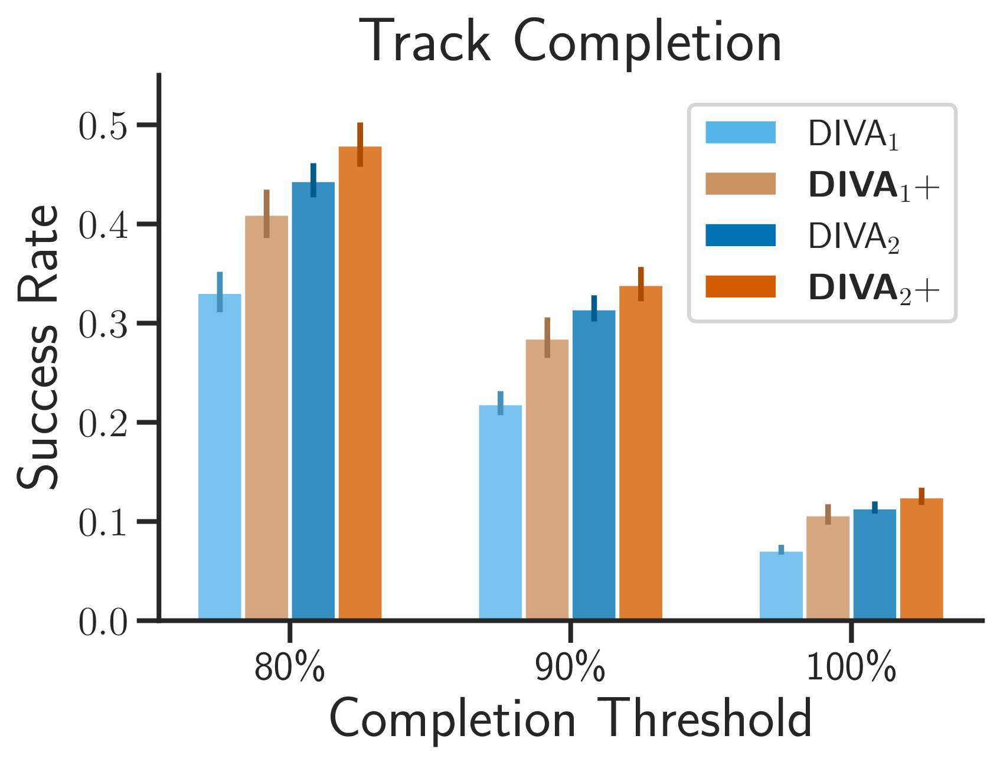
Combining QD + UED.
From the results above,
we see that while performance does not significantly improve for (2), the combination of DIVA and PLR⊥
is able to significantly improve performance on (1), and even statistically match the original DIVA results.
These results highlight the potential of such hybrid (QD+UED) semi-supervised environment design (SSED) approaches,
a promising area for future work.
Related Work
Meta-Reinforcement Learning
Meta-reinforcement learning methods range from gradient-based approaches (e.g., MAML)
, RNN context-based approaches
,
(e.g., RL2), and the slew of emerging works utilizing transformers
,
,
.
We use VariBAD , a state-of-the-art context
variable-based approach that extends RL2 by using variational inference to incorporate task
uncertainty into its beliefs. HyperX , an extension
that uses reward bonuses, was not found to improve performance on our domains. In each of these works, the
training distribution is given; none address the problem of generating diverse training scenarios in the
absence of such a distribution.
Procedural Environment Generation
Procedural (content) generation (PCG/PG) is a vast field.
Many RL and meta-RL domains themselves have PCG baked-in (e.g., ProcGen
, Meta-World ,
Alchemy , and XLand
).
Each of these works relies on human engineering to produce levels with meaningfully diverse features. A related
stream of works applies scenario generation to robotics—some works essentially perform PCG
, ,
while others integrate more involved search mechanics
,
,
, .
One prior work defines a formal but generic parameterization
for applying PG to generate meta-RL tasks. It is yet to be shown, however, if such an approach can scale to domains
with vastly different dynamics and greater complexity.
Unsupervised Environment Design
UED approaches—which use behavioral metrics to automatically define and adapt a curriculum of suitable tasks for
agent training—form the frontier of research on open-endedness. The recent stream of open-ended agent/environment
co-evolution works (e.g., ,
,
) was kickstarted by the POET
, algorithm.
The "UED" term itself originated in PAIRED , which uses the
performance of an "antagonist" agent to define the curriculum for the main (protagonist) agent. PLR
introduces an approach for weighting training levels based on
learning potential, using various proxy metrics to capture this high-level concept.
introduces PLR⊥, which only trains on levels that
have been previously evaluated, thus enabling certain theoretical robustness guarantees. AdA
uses PLR as a cornerstone of their
approach for generating diverse training levels for adaptive agents in a complex, open-ended task space.
ACCEL borrows PLR⊥'s scoring
procedure, but the best-performing solutions are instead mutated, so the buffer not only collects and prioritizes
levels of higher learning potential but evolves them. We use ACCEL as our main baseline because it has
demonstrated state-of-the-art results on relevant domains, and like DIVA, evolves a population of levels. The
main algorithmic differences between ACCEL and DIVA are that ACCEL (1) performs additional evaluation rollouts to
produce scores during training and (2) uses a 1-D buffer instead of DIVA's multi-dimensional archive.
PLR⊥ serves as a secondary baseline in this work; its non-evolutionary nature makes it a useful
comparison to DR.
Scenario Generation via QD
A number of recent works apply QD to simulated environments in order to generate diverse scenarios, with distinct
aims. Some works, like DSAGE , use QD to develop diverse levels
for the purpose of probing a pretrained agent for interesting behaviors. Another line of work applies QD to
human-robot interaction (HRI), and ranges from generating diverse scenarios
, to finding failure modes in shared autonomy systems
and human-aware planners
. DIVA's application of QD is inspired by these approaches,
as they produce meaningfully diverse environment scenarios, but no prior work exists which applies QD to define a
task distribution for agent training, much less adaptive agent training, or overcoming difficult
parameterizations in open-ended environments.
Discussion
The present work enables adaptive agent training on open-ended environment simulators by integrating the
unconstrained nature of unsupervised environment design (UED) approaches with the implicit
supervision baked into procedural generation (PG) and domain randomization (DR) methods. Unlike PG and DR,
which require domain knowledge to be carefully incorporated into the environment generation process, DIVA is able
to flexibly incorporate domain knowledge and can discover new levels representative of the downstream
distribution. Instead of relying on behavioral metrics to infer a general, ungrounded form of “learning potential”
like UED—which becomes increasingly unconstrained and therefore less useful as environments become more complex and
open-ended—DIVA is able to directly incorporate downstream feature samples to target specific,
meaningful axes of diversity. With only a handful of downstream feature samples to set the parameters of the
QD archive, our experiments demonstrate DIVA’s ability to outperform
competitive baselines compensated with three times as many environment steps during training.
In its current form, the most obvious limitation of DIVA is that, in addition to assuming access to downstream feature
samples, the axes of diversity themselves must be specified. However, we imagine these axes of diversity could be learned
automatically from a set of sample levels or selected from a larger set of candidate features. It may be possible to adapt
existing QD works to automate this process in related settings
. The present work also lacks a more thorough analysis of what
constitutes good archive design. While some heuristic decision-making is unavoidable when applying learning algorithms to
specific domains, a promising future direction would be to study how to approach DIVA’s archive design from a more
algorithmic perspective.
DIVA currently performs QD iterations over the environment parameter space defined by
E_U(\bm{\theta}), where each component of the genotype \bm{\theta} represents some
salient input parameter to the simulator. Prior works in other domains
(e.g., ) have demonstrated QD’s ability to
explore the latent space of generative models. One natural direction for future work would therefore be to apply DIVA to
neural environment generators (rather than algorithmic generators), where \bm{\theta} would
instead correspond to the latent input space of the generative model. If the latent space of these models is more convenient
to work with than the raw environment parameters—e.g., due to greater smoothness with respect to meaningful axes of
diversity—this may help QD more efficiently discover samples within the target region. Conversely, DIVA’s ability to
discover useful regions of the parameter space means these neural environment generators do not need to be “well-behaved”
or match a specific target distribution. Since these generative models are also likely to be differentiable, DIVA can
additionally incorporate gradient-based QD works (e.g., DQD ) to
accelerate its search.
Preliminary results with DIVA+ demonstrate the additional potential of combining UED and DIVA approaches. The F1 transfer
results (i.e., DIVA outperforming ODS trained directly on E_\textnormal{S}) further suggest that agents
benefit from flexible incorporation of downstream knowledge. In future work, we hope to study more principled integrations
of UED and DIVA-like approaches and to more generally explore this exciting new area of semi-supervised environment design
(SSED).
More broadly, now equipped with DIVA, researchers can develop more general-purpose, open-ended simulators without
concerning themselves with constructing convenient, well-behaved parameterizations. Evaluations in this work required
constructing our own contrived parameterizations since domains are rarely released without carefully designed
parameterizations. It is no longer necessary to accommodate the assumption made by DR, PG, and UED approaches—that either
randomization over the parameter space should produce meaningful diversity or that all forms of level difficulty ought to
correspond to meaningful learning potential. So long as diverse tasks are possible to generate, even if sparsely
distributed within the parameter space, QD may be used to discover these regions and exploit them for agent training. Based
on the promising empirical results presented in this work, we are hopeful that DIVA will enable future works to tackle even
more complicated domains and assist researchers in designing more capable and behaviorally interesting adaptive agents.
See our full PDF (ArXiv) for the Appendix, which includes additional details and results.